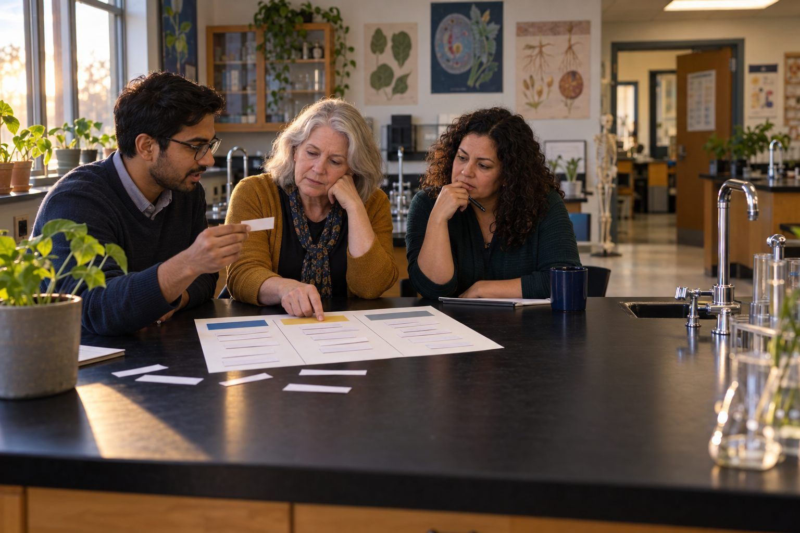

Student learningfor Grades 9–12, Higher Ed
Personal Learning Coach, With Guardrails
Students write custom instructions that turn an AI chatbot into a coach that makes them think, then stress-test it and judge it by evidence, not vibes.

All activities Professional learning
Educators pick apart a fictional "it worked!" report, then design a small, honest classroom inquiry that could actually show whether an AI-supported task improved learning.
"The kids loved it" and "scores went up" are the most common evidence offered for AI in classrooms, and neither shows the AI caused the learning. You don't need a research grant to do better. In this session participants sort study designs by what they can honestly conclude, critique a fictional teacher's inquiry report, and then plan a small, fair comparison for their own classroom or course: one learning target, a comparison that's as fair as practical, student work scored without knowing which condition produced it, and a plan to act on whatever they find, including "it didn't help."
Hook
Read aloud: "I let my second-period class use an AI tutor for the unit, and their test average was 9 points higher than sixth period's. It works!" (Tell the room it's a made-up quote.) Ask pairs: "Name one other reason second period might have scored higher." Collect answers fast: stronger class, morning vs. afternoon, the teacher was more excited, second period had more time, different students.
Facilitator noteEvery reason the room names is a confound. Name the word and keep a running list.
Explore
Pairs sort the Handout A strips into three categories: Could show the AI helped learning, Can't tell: something else could explain it, and Measures use or enjoyment, not learning. Then reveal the key and discuss the two or three strips pairs disagreed on most.
Facilitator noteStress that "measures enjoyment" isn't worthless. Engagement matters. It just answers a different question than "did they learn more?"
Explore
Everyone reads Handout B, Ms. Delgado's fictional inquiry report. In pairs, list (1) what she did well, (2) what else could explain her results, and (3) one change that would make her conclusion stronger. Share out. Strong critiques notice: different sections, the AI group had an extra revision day, she scored reports herself knowing which group each came from, one assignment only, and she reported the average but not what the student work actually showed.
Facilitator noteModel generosity: Ms. Delgado did more than most of us do. She named a target, used a rubric, and compared. The goal is a better next inquiry, not a takedown.
Model
Walk through four practical moves. (1) Crossover: both classes do Unit 1 one way and Unit 2 the other way, so every student gets both and class differences balance out. (2) Equal time: both conditions get the same minutes and the same number of revisions. (3) Blind scoring: replace names with codes, mix the stack, and have a colleague score some (or all) of the work without knowing the condition. (4) Decide in advance: write down what result would make you keep, adjust, or drop the approach before you look.
Facilitator noteBe honest about limits: a classroom inquiry won't prove anything universally, and that's fine. The question is whether it's good enough evidence to guide your next decision. If faculty plan to publish or present results beyond their institution, they should check with their institutional review board first.
Create
Each person completes Handout C for a real task in the next month where they're considering AI support: AI feedback on drafts, an AI tutor for practice problems, AI-generated practice questions, AI brainstorming for a project. Partners act as critical friends: after 12 minutes, swap planners and each writes one "What else could explain it?" question on the other's plan. Revise.
Facilitator noteEthical check: never withhold a support a student is entitled to (accommodations, IEP or 504 supports) for the sake of a comparison. A crossover design helps because everyone gets both versions.
Debrief
Each pair posts one sticky note on "Evidence that would convince me": the specific student work or result that would convince them the AI-supported version was better. Read a few aloud. Ask: "What will you do if the answer is 'no difference' or 'worse'?" Collect commitments to share results with a PLC, department, or coach in six weeks.
Facilitator noteCoaches: this is the measure-and-adjust stage of the coaching cycle. Offer to be the blind scorer; it's one of the most useful things a coach can do.
Transfer
Each person writes the start date, the scoring date, and the name of their blind scorer at the top of Handout C, then takes a photo of it. Leaders: identify one campus-level decision about an AI tool that should wait for this kind of evidence.
Facilitator noteLeaders can connect this to the five-question check: "What evidence will guide us?" becomes concrete when teachers bring small inquiries.
The full session runs on paper: the sort, the mock report, and the planner. The inquiries themselves can compare an AI-supported task with an unplugged version, and blind scoring works with paper student work: fold over names, write a code, shuffle, and hand the stack to a colleague.
Use a shared spreadsheet with student codes, a hidden condition column, and rubric scores so blind scoring and before-and-after comparisons are easy and names stay private. Optionally, participants paste their de-identified plan into a district-approved chatbot and ask "What else could explain a difference in these results?", then judge which suggested confounds are real for their classroom. In an LMS, post plans to a discussion so critical friends can comment across campuses.
Does it need a screen? A simple spreadsheet makes blind scoring and comparison across two units practical and keeps student names out of the analysis. Using AI to brainstorm confounds is optional; the participant still decides which ones matter, which is itself practice in judging AI output.
What you should be able to see or collect if it worked.
Educators plan a fair, blind-scored comparison of an AI-supported task, so tool choices in class rest on evidence of student learning.
Run your inquiry over the next four to six weeks and bring the blind-scored student work, not just the averages, to your PLC, department, or coach. Share one example of student work from each condition and your keep, adjust, or drop decision.